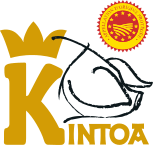
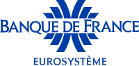

Pierre-Yves Pollet
Ingénieur agronome · Ingénieur logiciel
APE 6202A · Anglet (64)
06 64 81 94 76 · py.pollet@gmail.com
Pour construire la plateforme BNIA, trois acteurs collaborent : l’interprofession qui demande les données, l’opérateur qui les déclare, le prestataire qui développe l’outil. J’ai moi-même occupé chacune de ces trois places.

Coordinateur de l’ODG Kintoa
- Animation d’un réseau de 80 producteurs et 5 artisans
- Obtention de l’AOP Kintoa, au terme d’une démarche collective de plusieurs années
- Suivi des indicateurs de la filière et reporting
- Relations avec les institutions locales et régionales
Directeur de la coopérative Belaun
- Direction d’une structure de 6 salariés
- Doublement du chiffre d’affaires, de 400 k€ à 800 k€
- Production, développement commercial, gestion financière et budgétaire
- Obligations déclaratives et administratives

Chef de projet informatique
- Création d’un portail usagers avec back-office d’instruction : 6 000 utilisateurs, plus de 10 Md€ d’encours
- Reprise des données de l’ancien système (SAP) : 25 ans d’historique
- Encadrement de 4 développeurs
Les garanties pour le BNIA
- Un interlocuteur unique, du recueil du besoin à la mise en production, puis en maintenance.
- Du conseil, pas seulement du code : mon expérience de filière me permet d’interroger le besoin, de proposer des simplifications et d’accompagner l’évolution des pratiques.
- Le métier avant la technique : les écrans sont pensés pour les opérateurs comme pour le BNIA. Ils prennent en compte les contraintes de chacun.
- La reprise des données : c’est le piège principal de ce projet. Je l’ai déjà franchi pour la Banque de France avec des enjeux financiers et sécuritaires énormes.
Recommandation
Pierre-Yves est un collaborateur rare, qui se nourrit des défis qui lui sont confiés. Il est capable de prendre en charge un projet dans son intégralité et de le faire aboutir, en s’adaptant aux incertitudes et en s’ajustant aux changements imprévus. Son approche pragmatique et efficace, combinée à une attention constante aux détails, a permis la réussite d’un projet qui a fait grandir notre entreprise. Ce qui distingue particulièrement Pierre-Yves, c’est son engagement envers les résultats et la satisfaction des clients. Je recommande Pierre-Yves avec enthousiasme.
Mon responsable direct · recommandation publiée sur LinkedIn le 2 avril 2026
Parcours détaillé en annexe : curriculum vitae.